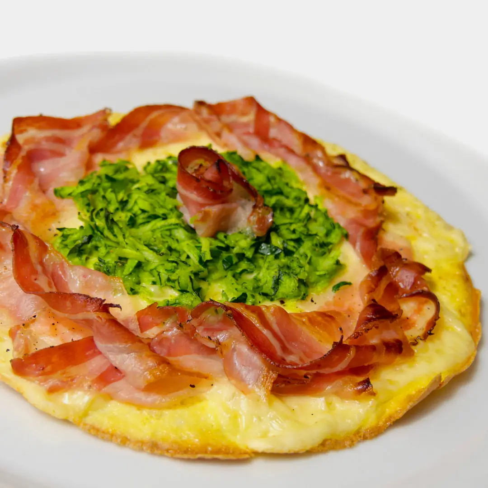
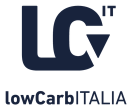

Conta cosa mangi, non quanto.
Dieta chetogenica senza pasti sostitutivi, per chi ha già provato mille diete. Ricevo a Roma EUR, allo Studio Medical Prime.
Nel piano non entrano
- Calorie contate
- Grammi pesati
- Calcoli assurdi
- Pasti sostitutivi
Ne hanno parlato
Nessuna formula magica, tre punti fermi.
Ogni piano va calibrato sulla persona. Alcuni punti fermi, però, valgono per tutti.
-
Le calorie non si contano.
Conta cosa si mangia, non quanto. Con i cibi giusti la fame torna controllabile e si mangia meno, senza pesare ogni grammo. Fanno eccezione gli sportivi.
-
Il cibo non è un farmaco.
Lo dice un farmacista. Mangiare bene fa bene alla salute, ma va curata la dieta nel suo insieme, non il singolo alimento.
-
Integratori solo se servono.
Si usano in caso di carenze specifiche. I pasti sostitutivi si possono evitare: la dieta deve restare naturale e piacevole.

Chetogenica, con cibo vero.
Pochissimi zuccheri e carboidrati, molti grassi, proteine in quantità moderata. Nessun pasto sostitutivo.
Nel piatto
- Carne e pesce
- Uova
- Formaggi
- Verdura a foglia verde
Fuori dal piatto
- Zucchero e miele
- Pane, pasta e riso
- Patate
- Legumi
Avvertenze
Quantità e tempi si decidono in visita, sulla persona.
Come funziona la prima visita.
Serve a conoscerti: abitudini, esami, terapie in corso. Poi si misura la composizione corporea e si imposta il percorso.
-
Prima di venire
Porta con te, se li hai:
-
In studio
- Lettura degli esami e dei referti che porti.
- Anamnesi approfondita, con attenzione a chi segue terapie farmacologiche.
- Analisi bioimpedenziometrica: composizione corporea e stato idrico.
- Analisi stratigrafica: misura dei muscoli in millimetri, per chi fa sport.
-
Dopo
Un controllo ogni tre settimane, per vedere cosa funziona e correggere il piano se serve.
Costo della prima visita: [TARIFFA PRIMA VISITA QUI]
Prenota la prima visitaCosa dicono i pazienti.
È il mio nutrizionista da quasi 3 anni, molto preciso ed empatico.
Prima visita molto soddisfacente. Il dottore spiega tutto nei minimi dettagli e ti introduce al percorso di vita che stai iniziando a intraprendere.
Dottor Mignano riesce a spiegare tutto in un modo accessibile, ti mette al proprio agio e risponde a tutte le domande e perplessità!
Prima farmacista, poi nutrizionista.
Sono biologo nutrizionista e farmacista. Mi occupo soprattutto di obesità, di interazione tra farmaci e alimenti e di dieta chetogenica.
Formazione
- 2014
- Laurea in Farmacia alla Sapienza di Roma e abilitazione da farmacista.
- 2017
- Master in Management Farmaceutico, Federfarma con SDA Bocconi.
- 2018
- Laurea specialistica in Nutrizione Umana a Tor Vergata ed esame di Stato da biologo nutrizionista.
Negli Stati Uniti
- 2017
- Alcuni mesi al Duke Diet & Fitness Center della Duke University, a studiare le diete per il controllo del peso.
- Poi
- Incontro con il dottor Eric Westman, pioniere della chetogenica, e visita alla clinica bariatrica del Duke Medical Center.
Insegnamento e divulgazione
- 2019
- Docente di Nutrizione Umana ed Endocrinologia alla scuola di osteopatia Chinesis IFOP.
- 2022
- Fondazione di Low Carb Italia, con alcuni colleghi.
Cinque libri, un podcast.
Scrivo per spiegare la chetogenica in modo semplice, senza calcoli assurdi. Quattro li ho scritti con il collega Erik Gozzo, medico chirurgo.
- Fame zero2025, con Erik Gozzo
- La dieta chetogenica senza prodotti2024, con Erik Gozzo
- Keto Diary. Prendi nota, non peso!2023, con Erik Gozzo
- Carbo-Loop2022, con Erik Gozzo
- Dieta chetogenica (per pigri)2021
Low Carb Italia Podcast
Racconta in modo semplice cosa sono le alimentazioni low carb e keto. Con la mia voce.
Ascolta su Spotify
Nel 2022 ho fondato Low Carb Italia con alcuni colleghi, per una cultura del cibo libera dalla dipendenza da zuccheri.
lowcarbitalia.orgTi aspetto allo Studio Medical Prime.
Via Francesco De Vico 37
00142 Roma EUR
Metro B, fermata EUR Fermi: 6 minuti a piedi.
[ORARI DI RICEVIMENTO QUI]
Apri in Google Maps Prenota la prima visita- Segreteria
- +39 348 311 7076
- Dott. Mignano
- +39 340 270 6165
- info@mignanopietro.it